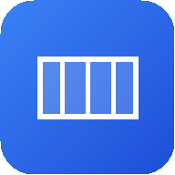

กดการ์ดตู้/รถ แล้วตรวจขนาดภายใน น้ำหนักบรรทุก และช่องประตูให้ตรงกับของจริง
เพิ่มสินค้า / คลังสินค้า / นำเข้า Excel-CSV ใส่ขนาด น้ำหนักต่อชิ้น จำนวน การหมุน และเปราะบาง
เลือกเป้าหมาย แล้วกดปุ่มสีน้ำเงิน ดูผลในภาพและแผงสรุป แก้คำเตือนสีแดงก่อนโหลดจริง
| แดง | ต้องแก้ก่อนโหลด: ชนกัน ล้นตู้ ลอย น้ำหนักเกิน ใหญ่เกินประตู |
| ส้ม | ควรดู: จุดศูนย์ถ่วงเอียง ของหนักบนของเบา ใกล้เต็ม (เกิน 90%) |
| ฟ้า | ข้อมูล: เช่น ระบบเลื่อนทั้งกองเพื่อสมดุล ต้องใช้ไม้ค้ำ |
| เขียว | ปกติ / ใส่ได้ครบ (เช่น 6/6) |
| กรอบเหลือง | กล่องที่เลือกอยู่ |
| สีกล่อง | สีของสินค้าแต่ละ SKU · กล่องเล็กในภาพ 2D แสดงเลขลำดับสินค้าแทนรหัส |
| จำนวนชิ้นมากที่สุด | อยากใส่ให้ได้มากชิ้นที่สุด |
| ใช้พื้นที่คุ้มที่สุด | งานทั่วไป เติมปริมาตรให้เต็ม |
| น้ำหนักสมดุลที่สุด | ของหนัก ต้องการจุดศูนย์ถ่วงกลางตู้ |
| ตามลำดับลงของ | ส่งหลายจุด ของที่ลงก่อนอยู่ใกล้ประตู |
ใส่ไม่ครบ → ดูคำแนะนำในแผงสรุป หรือแท็บ หลายตู้ / ปุ่ม เปรียบเทียบ
| ลากเมาส์ / ←→↑↓ | ย้ายกล่อง (Shift = ทีละ 1 ซม.) |
| R / T | หมุนแนวราบ / พลิกตั้ง-นอน |
| PgUp PgDn | ยกขึ้น / ลดลงทีละชั้น |
| Ctrl+D | คัดลอก 1 ชิ้น |
| L | ล็อกตำแหน่ง (Hybrid: ล็อกแล้วกดจัดเรียงซ้ำ) |
| Del / Esc | ลบ / ยกเลิกการเลือก |
| Ctrl+Z / Y | ย้อนกลับ / ทำซ้ำ |
| Ctrl+S · ? | บันทึกไฟล์งาน · เปิดคู่มือ |
| รายงาน PDF | ภาพ 3D ผังทุกมุม สรุปน้ำหนัก CoG VGM |
| ใบงานโหลดทีละขั้น | หน้าละขั้น มีช่องติ๊กและลงชื่อ |
| ใบส่งของ | แยกตามจุดส่ง เลือกต้นฉบับ + สำเนา |
| Excel / CSV | ตำแหน่งทุกชิ้น สรุปแยก SKU |
| มือถือหน้างาน | ลำดับการโหลด → เช็กลิสต์โหลด (มือถือ) |